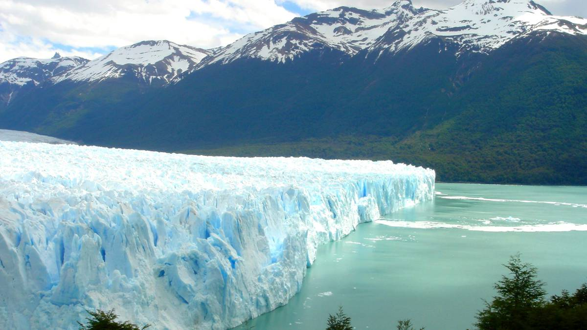
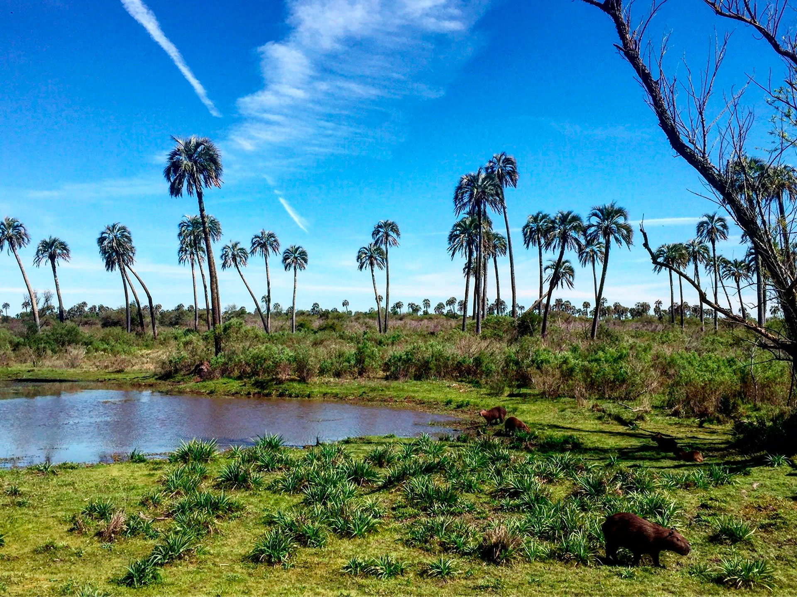

Ubicado entre Chubut y Río Negro en el Dpto. de Lácar, Los Lagos, Bariloche. Es refugio de naturaleza y cultura.
Parque nacional Lanín
Ubicado en Neuquén, resguarda y protege una importante porción de bosque andinopatagónico..
Parque nacional Los Arrayanes
Ubicado en Neuquén, uno de los lugares más hermosos de Argentina donde encontraremos los bosques más puros y extensos..

Parque nacional Perito Moreno
Ubicado en Santa Cruz, perteneciente a las ecorregiones Estepa Patagónica y los Bosques Patagónicos.
Parque Nacional Los Cardones
El parque se encuentra en el departamento de Cachi, al centro oeste de la provincia de Salta y a 160 kms de la capital pero el trayecto dura unas 3 hs.
Parque Nacional El Rey
Se ubica a unos 200 kilómetros al este de la ciudad de Salta capital y posee una superficie de más de 40 mil hectáreas que contienen muestras de las ecorregiones de Yungas y Chaco Seco.
Parque Nacional Aconquija
El Parque Nacional Aconquija que está ubicado al oeste de la Provincia de Tucumán y fue creado muy recientemente, el 22 de agosto de 2018.
Parque Nacional Baritú
El Parque Nacional Baritú protege más de 72 mil hectáreas y conserva una de las eco regiones de mayor diversidad de la Argentina: la selva de montaña o yungas.
Parque Nacional Iguazú
El Parque Nacional Iguazú abarca un área de bosque subtropical en la provincia de Misiones de Argentina, en la frontera con Brasil. Aqui se encuentra la famosa Garganta del Diablo.
Parque nacional El Impenetrable
Emplazado en el corazón del Gran Chaco, entre los ríos Bermejo y Bermejito, protege el mayor relicto del legendario Impenetrable chaqueño.
Parque Nacional Iberá
Además, por su tamaño y calidad de hábitat, esta área de conservación representa una oportunidad única para la restauración de ambientes y reintroducción de especies localmente extintas como el yaguareté.

Parque nacional El Palmar
Localizado en la confluencia de las regiones Pampeanas y del Espinal, y recostado sobre el Río Uruguay, en él se encuentra una de las muestras más importantes de los palmares de yatay.
Parque Nacional Quebrada del Condorito
Sus quebradas, serranías y pampas exhiben una fascinante gama de especies de fauna y flora exclusivas (endemismos) que son resultado de su relativo aislamiento, aun cuando reciben influencia de las ecorregiones vecinas.
Parque Nacional Talampaya
Ubicado en la provincia de La Rioja, alberga una amplia gama de antepasados de mamíferos, así como vestigios de dinosaurios y plantas, que ilustran la evolución de los vertebrados.
Parque Nacional Sierra de las Quijadas
Magnífico y árido paisaje de serranías erosionadas por el agua y el viento que generan laberintos,con un gran anfiteatro natural en el corazón de la sierra.
Parque Nacional El Leoncito
Su riqueza natural desmiente lo que parece ser a primera vista un desierto. En el área se entremezclan paisajes de llanos entre sierras, planicies puneñas, filos montañosos y pequeños oasis en altura.